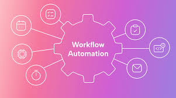

Engineering & design
SolidWorks
3D printing
Pneumatics
GD&T
DFM / DFA
ROS
Digital Portfolio
Digital Transformation Analyst and Systems Engineer. I specialize in identifying process bottlenecks and leveraging AI automation, rapid prototyping, and systems thinking to deploy real-world solutions.
About

Digital Transformation Analyst and Systems Engineer. I specialize in identifying process bottlenecks and leveraging AI automation, rapid prototyping, and systems thinking to deploy real-world solutions. I translate stakeholder needs into governed digital delivery — workflows, integrations, and applications — with the same rigour I apply to requirements, interfaces, documentation, and training.
Capabilities
From AI-assisted build pipelines and workflow automation to physical prototyping — a toolkit shaped for transformation programmes, not just lab coursework.
Career
From systems internships to digital transformation ownership — shipping governed, documented change that stakeholders can run without heroics.

Portfolio
Featured work in AI-accelerated delivery and governed automation. Hardware integration and university-era projects live on the Past work page.

Designed, generated, and deployed this static web portfolio using AI-driven tools (Cursor/Composer), reducing development time from weeks to hours.
The legacy student portfolio no longer matched a Digital Transformation Analyst storyline: the template was dated, the information architecture was rigid, and manually rewriting responsive HTML/CSS would burn weeks while still risking weak accessibility and inconsistent content.
I used Cursor/Composer as an implementation accelerator: structured prompts for semantic sections, design tokens, and DOM refactors, then reviewed every output for layout, contrast, and keyboard flow. The workflow treated the LLM as a pair programmer under explicit IA and brand constraints rather than a black-box author.
The result is this deployable, two-page static site — including CV preview and embedded inline case studies — produced in hours instead of a multi-week ground-up build, with interview-ready narrative and room to iterate as roles and proof points evolve.

Digital transformation delivery: AI-assisted automations, self-hosted operations, and stakeholder-safe rollout — with documentation, training, and Responsible AI / PDPA alignment built in from day one.
Teams needed dependable handoffs between tools without multiplying shadow IT: manual steps slowed onboarding, duplicated data entry, and created grey areas for PDPA, retention, and Responsible AI expectations.
I prototyped and hardened flows in n8n with Python connectors where needed, mapped trust boundaries for each integration, and wrote operator-facing documentation so automations could be owned after launch — not dependent on ad-hoc fixes.
Outcomes were framed around fewer manual touches, clearer exception paths, and measurable cycle time — so stakeholders could adopt the workflows confidently while staying inside governance boundaries (anonymise exact metrics where NDAs apply).
Hello
Open to roles in digital transformation, systems integration, and AI-governed automation. Reach out below.
Phone: +65 8993 7209
Prefer email for first contact — I typically reply within 1–2 business days.